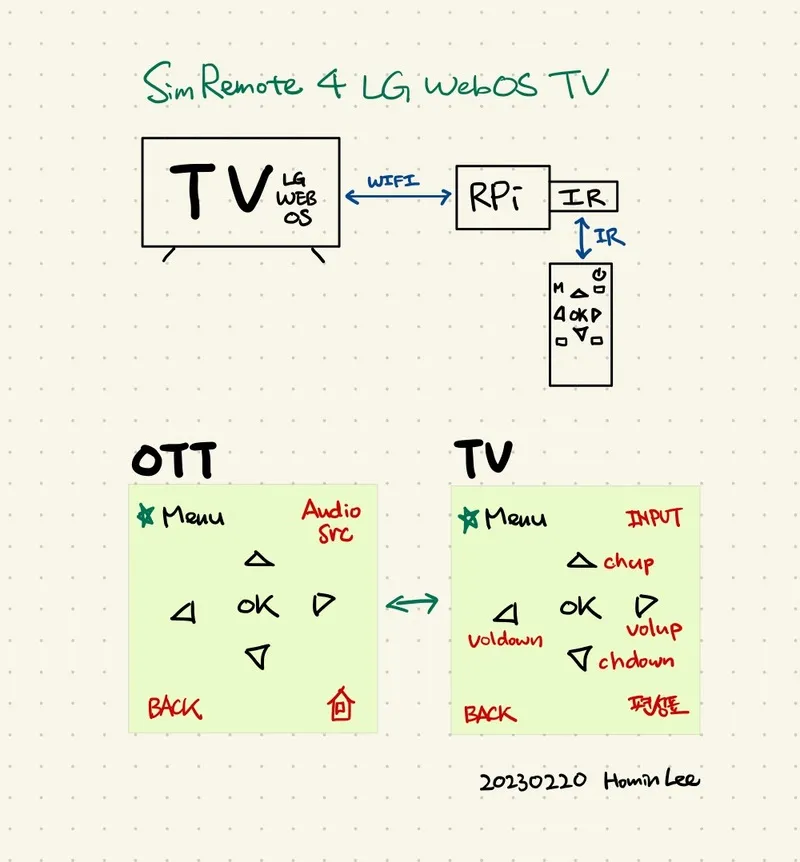
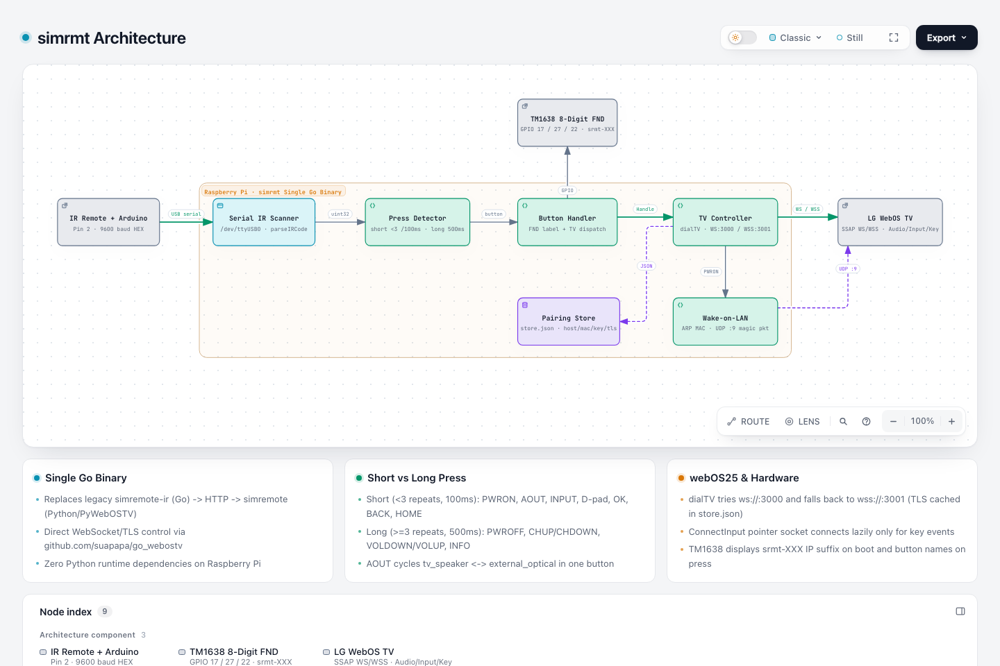

현재 구조 (simrmt + go_webostv)
아두이노 시리얼 수신부터 SSDP 검색, WoL, WebOS 제어, FND 출력까지 한 바이너리에서 끝납니다.
LG OLED TV 광출력 단자에 15년 넘은 5.1ch 리시버를 물려두면 내장 OTT 앱 소리가 5.1ch로 깔끔하게 나옵니다. 문제는 TV 스피커와 광출력을 오갈 때마다 설정에서 사운드 메뉴로 깊이 들어가 좌우 키로 고르고 Back으로 닫아야 한다는 점이었습니다.
예전에 Go용 WebOS 패키지가 마땅치 않을 때는 PyWebOSTV로 Python HTTP 서버를 띄우고 Go 프로그램(simremote-ir)이 호출하도록 얽어 두었습니다. 부서진 모니터에서 얻은 막리모컨과 IR 수신기를 아두이노에 붙이고, 라즈베리파이에서 동작하게 만든 게 시작이었습니다.
이번에는 PyWebOSTV를 직접 Go로 옮긴 go_webostv를 써서 Python 서버를 걷어내고 Go 바이너리 하나로 합쳤습니다. webOS25의 TLS(wss://:3001) 연결과 Wake-on-LAN까지 한 번에 처리합니다.

두 프로세스로 나뉘어 HTTP를 타던 예전 구조를 단일 Go 바이너리와 직접 WebSocket/TLS 연결로 줄였습니다.
아두이노 시리얼 수신부터 SSDP 검색, WoL, WebOS 제어, FND 출력까지 한 바이너리에서 끝납니다.
시리얼 파싱용 Go 프로세스와 PyWebOSTV용 Python Flask 서버 두 개를 함께 띄워야 했습니다.

main.go, tv.go, fnd.go, wol.go의 실제 호출 흐름과 소스 위치를 대화형 다이어그램으로 열어 볼 수 있습니다.
대화형 아키텍처 열기아두이노가 NEC IR 코드를 읽어 USB 시리얼로 넘기면, 라즈베리파이의 simrmt가 짧게·길게 누름을 판정해 TM1638 FND와 TV로 보냅니다.
| 장치 | 역할 / 핀 | 연결 대상 |
|---|---|---|
| Arduino + IR 수신기 | IR_RECEIVE_PIN 2 · 9600 baud |
USB 시리얼 (/dev/ttyUSB0) |
| TM1638 FND (DATA) | GPIO 17 (BCM) |
라즈베리파이 GPIO (periph.io) |
| TM1638 FND (CLK) | GPIO 27 (BCM) |
라즈베리파이 GPIO (periph.io) |
| TM1638 FND (STB) | GPIO 22 (BCM) |
라즈베리파이 GPIO (periph.io) |
| IR 코드 | 짧게 누르기 | 길게 누르기 |
|---|---|---|
0xFB04E786 | PWRON | PWROFF |
0xBC43E786 | AOUT | AOUT |
0xE916E786 | INFO | INFO |
0xE817E786 | UP | CHUP |
0xE41BE786 | DOWN | CHDOWN |
0xE51AE786 | LEFT | VOLDOWN |
0xA659E786 | RIGHT | VOLUP |
0xBD42E786 | OK | OK |
0xFF00E786 | BACK | BACK |
0xF00FE786 | HOME | HOME |
라즈베리파이 1 B+(ARMv6)부터 64비트 보드까지 스크립트 한 줄로 크로스 컴파일하고 systemd 서비스로 등록합니다.
./build_and_install_systemservice_arm32.sh admin@ir.local
./build_and_install_systemservice_arm64.sh pi@ir.local-port(기본 /dev/ttyUSB0), -tv(미지정 시 SSDP 자동 검색), -store(호스트·MAC·client_key·TLS 여부 저장), -n(드라이런)
simrmt -port /dev/ttyUSB0 -store /var/lib/simrmt/store.json